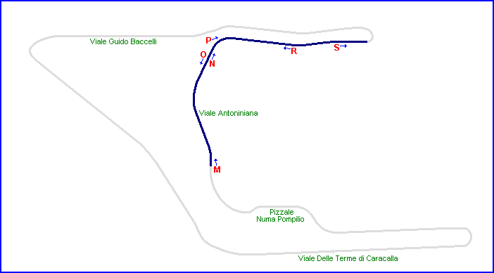
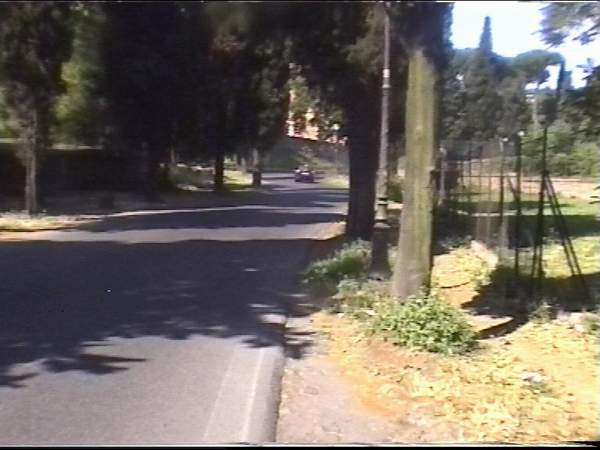
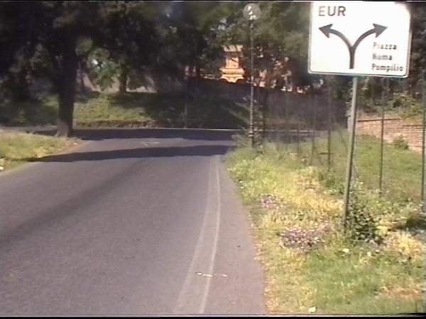
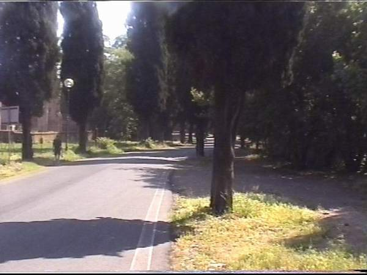
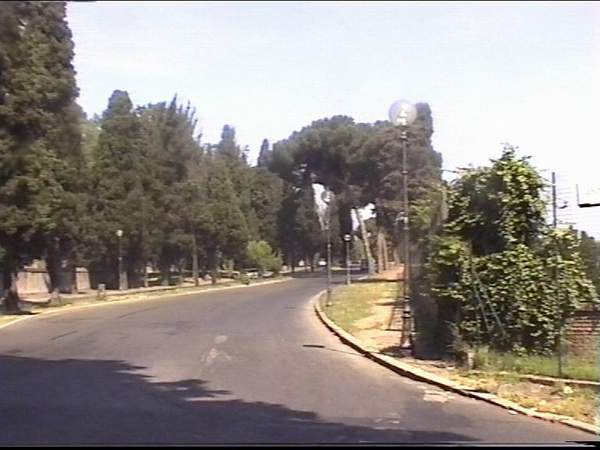
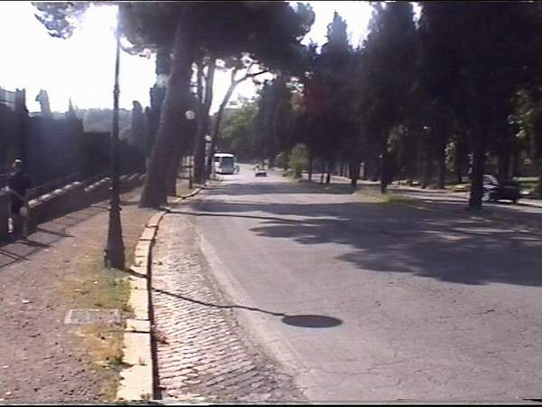
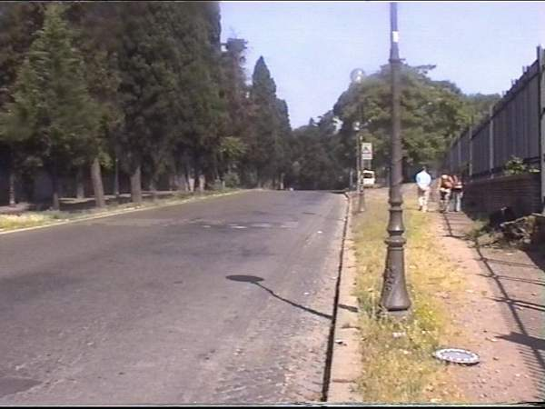

Terme di Caracalla - Page 3 of 5
|| Contents | Page 1 | Page 2 | Page 3 | Page 4 | Page 5 || Home ||

Letters and arrows on the map represent the direction and location of where the pictures
were taken. Click links above to view the photographs.
Return to racingcircuits.net's Photo Archive Main Index

M - Looking uphill through the wooded
section before turn 5.

N - Just before the right-hander at turn 5.

O - Looking back down from the opposite side
of the road to where N was taken.

P - From the outside of turn 5 looking up
the road towards turn 6.

R - Looking back towards turn 5 about half
way to 6.

S - Taken from what would have been around
the braking area for turn 6 - another 180 degree hairpin.
Photographs & Text ©Barry Boor. Reproduced here with kind permission.